空间相关软化能否产生多个凝聚性游离块？
1792材料点，原始非局部图和界面不变；只改变bulk软化区间。一个固定300 µm场，同一冻结棋盘涡旋开环剪切，两个真实3.6 ms原生计算。
TARGET_NOT_MET_SINGLE_REALIZATION。本轮参数未标定；实际机械剪切不是已验证微泡声流。全部动态画面来自实际接受态，位移×1。
| 工况 | 20–200节点块 | 最大自由块 | 细屑/脱落 | 净外功 nJ | wall s |
|---|
| uniform | 0 | 2 | 100.0000% | 13.940604 | 2166.19 |
| heterogeneous | 0 | 3 | 95.9459% | 13.048879 | 2139.17 |
三个真实三维视频
VIDEO_01_UNIFORM_VS_HETEROGENEOUS.mp4
实际帧时间与源状态
VIDEO_02_DAMAGE_AND_SURVIVING_BONDS.mp4
实际帧时间与源状态
VIDEO_03_TRUE_FRAGMENT_EVOLUTION.mp4
实际帧时间与源状态
静态图（点击下载PDF）
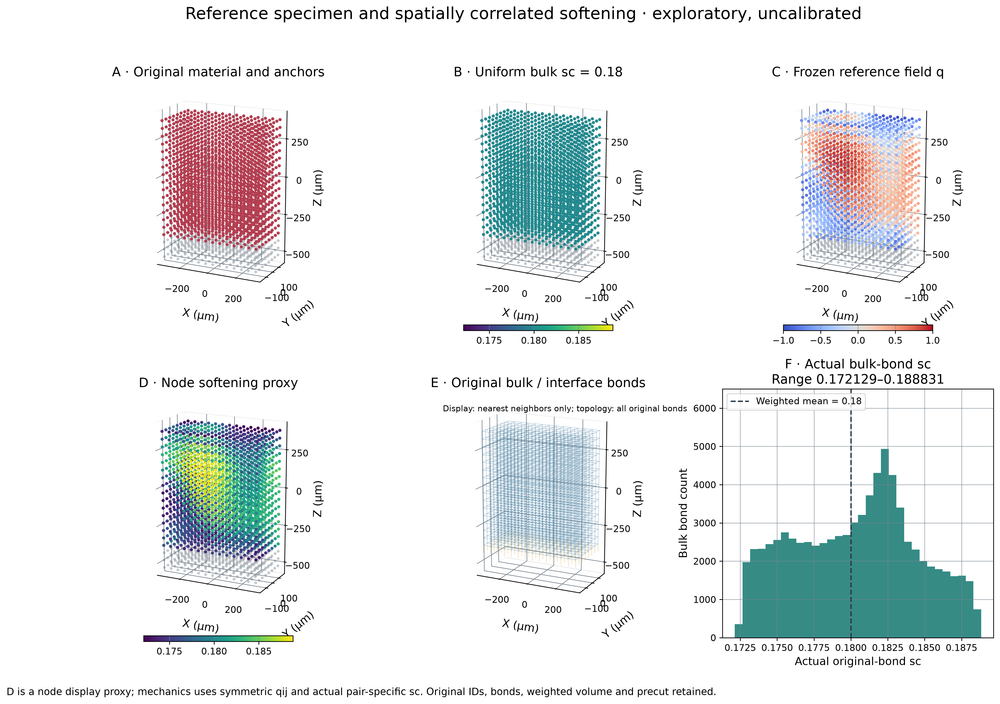
Fig1_Reference_and_heterogeneity · PDF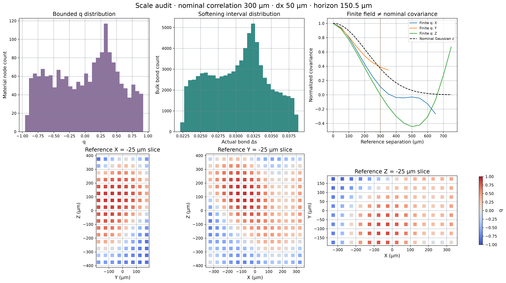
Fig2_Field_statistics_and_scale · PDF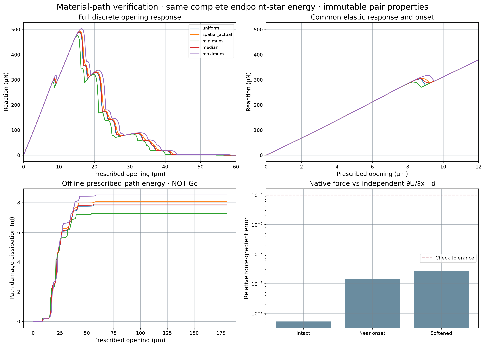
Fig3_Material_energy_validation · PDF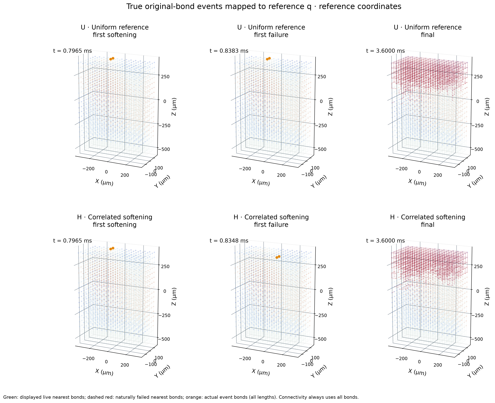
Fig4_Original_bond_fracture_locations · PDFFig5_Damage_keyframes_heterogeneous · PDF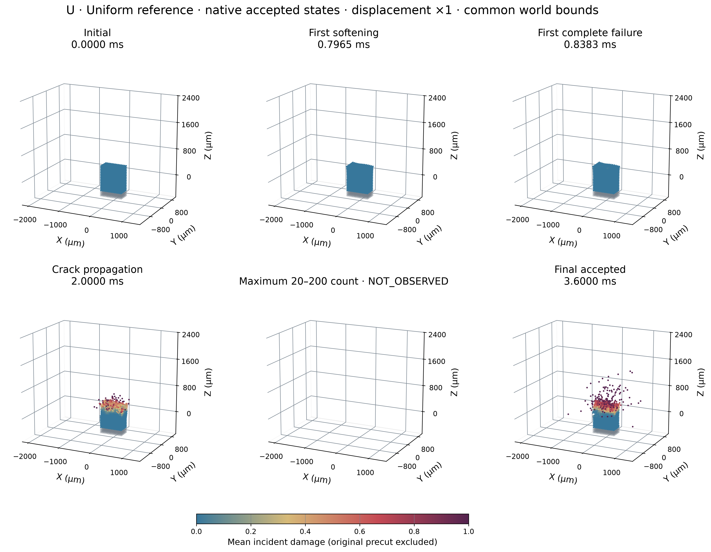
Fig5_Damage_keyframes_uniform · PDF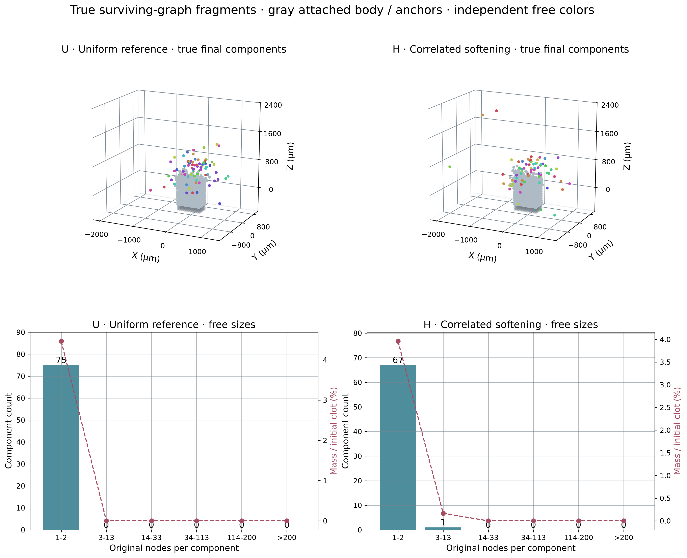
Fig6_True_fragments_and_sizes · PDF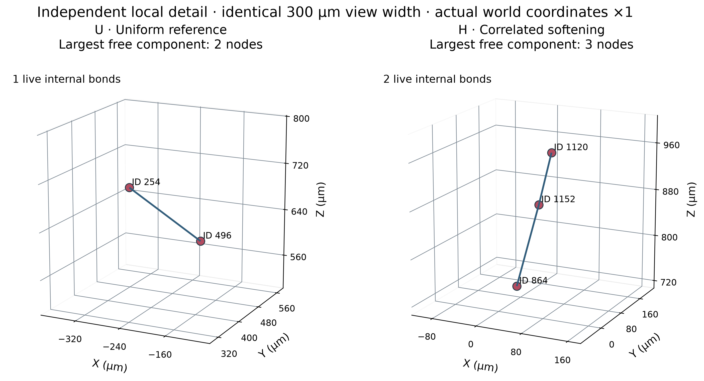
Fig6b_Largest_free_component_detail · PDF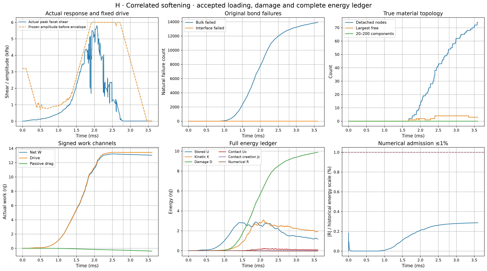
Fig7_Loading_damage_energy_heterogeneous · PDF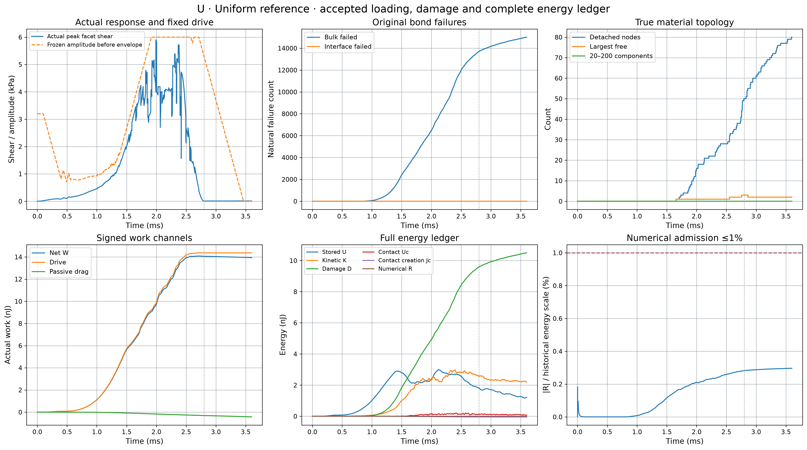
Fig7_Loading_damage_energy_uniform · PDF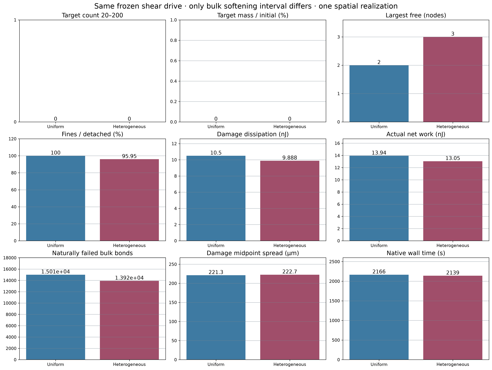
Fig8_Core_scientific_comparison · PDF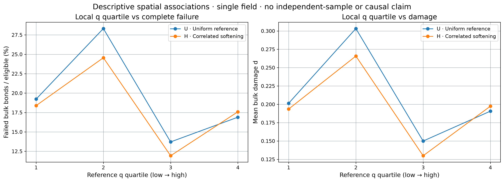
Fig8b_Local_property_damage_association · PDF证据与复现
表面仍是受支持几何代理；无三维表面的细屑水动力未解析。单一随机实现只能支持本次对照和空间关联，不能推出一般血栓组织规律或已标定Gc。